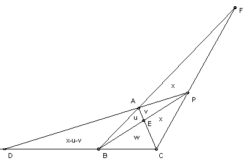

P is a point outside the triangle ABC. The perpendiculars from P meet the lines BC, CA, AB at D, E, F, respectively. The triangles PAF, PBD, PCE all have equal area. Show that their area must equal that of ABC.
Solution
In principle, there are two possible configurations: (1) P can lie between the two rays BA and BC (on the opposite side of AC to B), or similarly between the rays AB and AC or between the rays CA and CB; or (2) P can lie between the rays AB and CB (on the infinite side, opposite to A and C), or the two similar arrangemetns. But the second case implies that one of the triangles PAF, PBD, PCE is a proper subset of another, so it is not possible. Thus, without loss of generality, we have the configuration shown below. Take area PAF = area PBD = area PCE = x. Also put area APE = u, area ABE = v and area CBE = w.

BD/DC = area ADB/area ADC = area PDB/area PDC. So (x - u - v)/(x - v + w) = x/(2x + w). Hence x2 - x(2u + v) - uw - vw = 0 (*). Similarly, CE/EA = area CBE/area CBA = area CPE/area EPA, so w/u = x/v. Substituting in (*) gives x2 - x(2u + ux/w) - ux - uw = 0, or x2(w - u) = uw(3x + w). Similarly, AF/FB = area AFP/area FPB = area AFC/area FCB, so x/(x + u + v) = (2x + v)/(2x + u + v + w) (**). Again, eliminating v, we get x = w(w2 - uw - u2)/(u2 + 2uw). Now eliminating x, we get (w - u)(w + u)(w3 - 3uw2 - 4u2w - u3) = 0. Obviously we cannot have w + u = 0 (for that means area ABC = 0, but then ABC is not a triangle). If w - u = 0, then v = x, so (**) gives x/(2x + u) = 3x/(3x + 2u), so 3x + u = 0, so x = 0, which is impossible. So we must have w3 = 3uw2 + 4u22 + u3 = u(3w + u)(w + u).
Hence x = (w3 - uw(u+w) )/(u2 + 2uw) = (u+w) ( u(3w+u) - uw)/(u2 + 2uw) = u+w, which is the required result.

© John Scholes
jscholes@kalva.demon.co.uk
14 Oct 2002